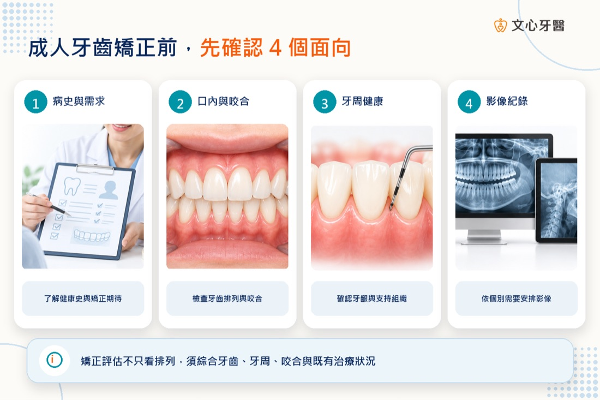
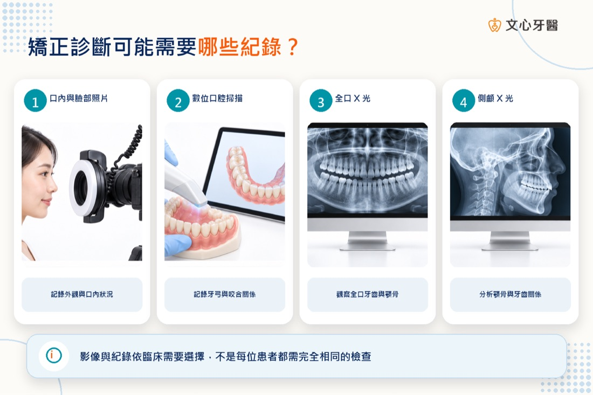
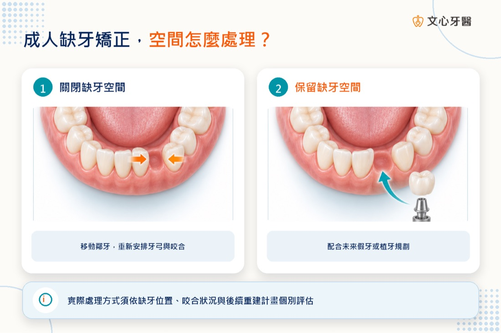

前言
成年後想改善牙齒排列或咬合，常會同時遇到另一個疑問：如果有蛀牙、牙齦流血、牙周病、缺牙、假牙或植牙，能不能直接開始矯正？
答案不是單純的「可以」或「不可以」。牙齒矯正會讓牙齒在牙周組織中逐步移動，療程期間也需要維持穩定的口腔清潔與定期追蹤。因此，開始前不能只看牙齒整不整齊，還要確認牙齒、牙根、牙周組織、咬合與既有贋復物的狀況，再依個別需求安排治療順序。
有些問題可能要先處理到穩定，再開始矯正；有些則可與矯正治療協調進行。缺牙空間要關閉、保留，或為未來假牙與植牙做準備，也應在移動牙齒前納入整體計畫，而不是等牙齒排整齊後才決定。
本文整理成人矯正前常見的檢查，以及蛀牙、牙周病、缺牙、假牙、植牙與智齒的評估原則。每個人的檢查項目與治療順序不同，實際仍須由醫師依口內檢查及必要影像資料判斷。

※成人矯正前不只看牙齒排列，也要確認牙齒、牙周、咬合及既有治療狀況。
本文重點
- 成人矯正前通常會了解醫療與牙科病史、治療需求及可配合程度。
- 口內檢查會評估牙齒排列、咬合、蛀牙、牙周、缺牙、假牙與植牙等狀況。
- 照片、口腔掃描、X 光或其他影像是否需要，應依臨床判斷。
- 活動性蛀牙、牙齦發炎或未穩定的牙周問題，通常需要先評估與處理，再決定矯正時機。
- 缺牙不代表不能矯正，但要先規劃關閉空間、保留空間或配合後續重建。
- 智齒、拔牙、植牙與更換假牙都不是成人矯正前一律必做的固定流程。
成人開始矯正前，為什麼不能只看牙齒整不整齊？
矯正治療不是單純把牙冠排列整齊。醫師需要評估牙齒如何移動、牙根周圍組織能否承受治療、移動後如何建立咬合，以及現有牙齒是否適合作為治療中的支撐。
成人可能已有補牙、根管治療、牙冠、牙橋、植牙或缺牙，也可能有牙齦退縮、骨支持減少、牙齒磨耗與顳顎關節症狀。這些情況不一定排除矯正，但可能影響治療目標、施力方式、裝置選擇與跨科治療順序。
一次完整評估至少要回答三件事：目前有哪些排列與咬合問題？牙齒、牙周及口腔組織是否處於適合治療的狀態？矯正要如何和補牙、牙周、假牙或植牙等治療協調？
第一次評估通常會先了解哪些資料？
醫師通常會先詢問患者最在意的問題，例如牙齒擁擠、暴牙、戽斗、深咬、咬合不順或笑容外觀，並了解希望改善的程度。病史詢問可能包含：
- 過去是否接受過矯正，以及維持器配戴情況
- 蛀牙、牙周治療、根管治療、拔牙、外傷及手術史
- 現有假牙、牙橋、植牙或活動假牙的位置
- 刷牙、牙縫清潔、抽菸、磨牙及口腔習慣
- 顳顎關節不適、張口受限或咀嚼問題
- 全身疾病、懷孕、過敏及目前使用的藥物
- 可配合回診、清潔與裝置使用的程度
部分疾病或藥物可能影響口腔組織、骨代謝、出血風險或治療安排。就診時應如實提供資料，不要自行停藥；如有需要，牙醫師可能與原治療醫師共同評估。
口內與咬合檢查會看什麼？
口內檢查不只記錄哪顆牙齒歪斜，也會觀察上下顎與牙弓關係、前後牙接觸、咬合深度、牙齒擁擠或空隙及牙齒中線。同時還會查看：
- 是否有未處理蛀牙、破裂牙齒或不良補綴物
- 牙齦是否紅腫、流血、退縮或有牙周囊袋
- 牙齒是否鬆動，牙齒支持組織是否足夠
- 牙齒磨耗、裂紋、敏感或根管治療後狀況
- 缺牙空間、乳牙留存、阻生齒或多生牙
- 假牙、牙冠、牙橋及植牙的位置與狀態
- 舌頭、繫帶、唇頰與其他口腔軟組織
如果清潔狀況不佳，矯正裝置可能增加清潔難度。醫師可能先協助建立刷牙與牙縫清潔方式，待口腔衛生較穩定後再開始治療。
矯正前一定要拍 X 光、照相或做口腔掃描嗎？
矯正診斷常需要把臨床檢查與不同紀錄放在一起分析。依個別情況，醫師可能安排：
- 臉部與口內照片：記錄臉型、笑容、牙齒排列與咬合
- 數位口腔掃描或齒模：分析牙弓、牙齒大小與咬合關係
- 全口 X 光：觀察牙根、齒槽骨、缺牙、阻生齒與其他結構
- 側顱 X 光：分析上下顎、牙齒角度與臉部骨骼關係
- 局部牙科 X 光或其他影像：針對特定牙齒、牙周或手術需求評估
影像不是越多越完整，也不是每位患者都要做相同組合。美國牙醫學會的放射影像建議強調，應先經臨床檢查，再由醫師依診斷與治療需要判斷影像種類，並權衡臨床效益與輻射暴露。
若想先了解常見的初診資料收集，可延伸閱讀〈第一次諮詢隱適美會做什麼？一定要 3D 口掃、拍 X 光嗎？〉。

※影像與紀錄項目應依臨床需要選擇，不是每位患者都需要完全相同的檢查。
有蛀牙，可以直接開始牙齒矯正嗎？
如果有活動性蛀牙、牙齒疼痛、牙齒破裂或填補物邊緣異常，通常要先確認範圍與處理方式。矯正裝置會增加部分區域的清潔難度，若未控制蛀牙風險便開始治療，後續處置可能更複雜。
但「有補過牙」不等於不能矯正。已完成治療且狀況穩定的牙齒，經檢查後仍可能納入計畫。若需要根管治療、牙冠或大範圍重建，則要由矯正與相關科別協調先後順序。有些暫時性修復會先維持功能，待牙齒位置確定後再完成正式贋復；是否如此安排須依個案判斷。
矯正前除了處理蛀牙，也要評估造成蛀牙的風險是否已改善，包括含糖飲食頻率、含氟牙膏使用、刷牙與牙縫清潔。補好一顆牙，不代表療程期間不會再出現新的問題。
有牙齦發炎或牙周病，可以做矯正嗎？
牙齦刷牙流血、紅腫或口臭，可能與牙菌斑堆積及牙齦發炎有關；牙周病則可能涉及牙齒周圍支持組織與齒槽骨。兩者不能只靠症狀自行區分，需要牙周檢查與必要影像判斷。
若存在未控制的牙周發炎，通常不宜貿然開始移動牙齒。醫師會評估牙周囊袋、出血、牙齒鬆動、齒槽骨支持與清潔能力，視需要安排牙周治療與追蹤。待狀況穩定後，部分牙周病患者仍可能接受經過調整的矯正治療，但施力、移動範圍、回診與維護方式可能和一般患者不同。
矯正期間也必須持續牙周維護。完成矯正不等於牙周問題自動消失；若清潔困難、牙齦持續出血或牙齒鬆動增加，應提早回診。
缺牙可以矯正嗎？空間要關閉還是保留？
缺牙不代表不能接受矯正。相反地，矯正有時正是整體缺牙重建的一部分。重要的是在療程開始前先決定缺牙空間的用途。
常見方向包括：
- 以矯正移動鄰近牙齒，關閉部分或全部缺牙空間
- 調整並保留合適空間，供未來牙橋、植牙或其他贋復使用
- 校正傾倒牙齒與牙根位置，改善後續重建條件
- 在多顆缺牙或咬合改變時，重新分配整體牙弓空間
選擇哪一種方式，要考量缺牙位置、鄰牙狀況、咬合、臉型、牙周與齒槽骨條件、年齡，以及患者對療程與後續維護的期待。文獻也指出，缺牙病例常需要矯正、贋復、牙周或口腔外科共同規劃；若等到矯正完成後才決定植牙或假牙位置，可能失去調整空間與牙根位置的機會。

※缺牙空間要關閉或保留，應在矯正前與後續重建需求一起規劃。
有假牙、牙橋或植牙，還能矯正嗎？
有牙冠或補綴物的牙齒不一定不能移動，但醫師需先確認牙齒本身、牙根、牙周與補綴物是否穩定，也要評估矯正裝置如何黏著。療程中若需更換牙冠或調整假牙，時機應與矯正計畫協調。
牙橋會把多顆牙連接在一起，可能限制個別牙齒移動；是否需要暫時拆除、分段或更換，不能一概而論。活動假牙也可能要隨牙齒位置改變而調整。
一般骨整合植牙不像天然牙有相同的牙周韌帶，通常不會以一般矯正方式移動。因此，若尚未植牙而缺牙區需要重新分配空間，常要先完成矯正規劃，再決定植牙位置與時機；已經有植牙者則需要把它的位置納入治療限制或支抗設計。實際安排須由矯正與贋復、植牙醫師共同評估。
智齒一定要在矯正前拔掉嗎？
不一定。智齒是否拔除，不應只以「要做矯正」作為唯一理由。醫師會評估智齒的位置、萌發空間、是否阻生、是否反覆發炎或蛀牙、是否影響鄰牙，以及矯正與手術計畫。
有些人需要在療程前處理，有些可在療程中或之後安排，也有人在持續追蹤下不需拔除。若影像顯示智齒靠近神經或其他重要構造，還需進一步評估手術風險。
固定式牙套與隱形牙套，前置檢查一樣嗎？
兩種方式的核心診斷基礎相同：都需要了解病史、檢查牙齒與牙周、分析排列和咬合，並依需要取得照片、掃描或影像。差異主要在裝置特性、牙齒移動設計、清潔方式與患者配合需求，而不是隱形牙套可以省略牙周或蛀牙檢查。
隱形牙套可自行取下，但必須依指示維持配戴時間、正確取戴與清潔；固定式矯正器不需自行配戴，卻需要更仔細清潔矯正器周圍。醫師會依治療複雜度、牙周條件、既有補綴物及生活習慣評估適合的方式。
如果正在比較台南牙齒矯正與台南隱形矯正，可先閱讀〈台南隱適美 vs 傳統牙套差在哪？療程時間與適合族群比較〉，再於檢查後討論個別適用性。
第一次諮詢前，可以準備什麼？
為了讓醫師更完整掌握狀況，可事先整理：
- 最希望改善的功能或外觀問題及優先順序
- 過去牙科治療與矯正經驗
- 正在使用的藥物、重要病史及過敏資訊
- 近期在其他診所拍攝的牙科影像或治療紀錄
- 假牙、植牙或缺牙的後續治療計畫
- 工作、就學、旅行與回診時間限制
- 對固定式或隱形矯正的疑問與生活習慣
既有影像能否直接使用，要由醫師確認拍攝日期、範圍與診斷需求，不一定能完全取代新的紀錄。諮詢時也可詢問哪些問題要先處理、由哪一科處理，以及各階段的預計銜接方式。
常見問題（FAQ）
Q1：成人矯正前一定要先洗牙嗎？
不一定用「每個人都先洗牙」概括。醫師會評估牙結石、牙齦發炎、牙周狀況與最近一次清潔時間，再決定是否需先接受洗牙、牙周治療或其他處置。重點是開始矯正前建立可維持的口腔衛生狀態。
Q2：有一兩顆蛀牙，可以先戴牙套再慢慢補嗎？
不建議自行假設可以延後。蛀牙深度、位置、症狀及後續修復方式都會影響順序。應先由牙醫師檢查，確認是否需在矯正前處理，以及補牙後是否影響裝置黏著或牙齒移動。
Q3：牙周病治療過，就一定不能做矯正嗎？
不一定。若牙周狀況經治療後穩定，部分患者可在牙周與矯正醫師共同監測下接受治療；但治療目標、施力和追蹤頻率可能需要調整。是否適合仍須依牙周檢查與影像判斷。
Q4：缺牙一定要先植牙才能矯正嗎？
不一定。若缺牙空間需要關閉、重新分配或調整鄰牙牙根，通常要先完成整體矯正與重建規劃。植牙時機會受缺牙位置、骨條件、牙齒移動方向與治療目標影響。
Q5：做過根管治療的牙齒可以移動嗎？
經根管治療的牙齒不必然排除矯正，但要先確認牙根、根尖周圍組織、牙體結構與贋復狀況是否穩定。若有疼痛、病灶或牙齒裂損疑慮，應先處理再決定矯正安排。
Q6：已經有植牙，可以用隱形牙套嗎？
可能可以，但植牙位置通常不會像天然牙一般移動，會成為計畫中的限制或支抗條件。醫師要評估其他牙齒需要如何移動，以及透明牙套能否完成預定目標。
Q7：矯正前的 X 光會拍很多張嗎？
不一定。影像種類與張數應依臨床檢查、既有紀錄與診斷需求選擇，不是每位患者的固定必做組合。
先把口腔條件與治療順序釐清，再選擇矯正方式
成人牙齒矯正前的重點，不是趕快選擇金屬矯正器或隱形牙套，而是先確認牙齒、牙周、咬合與既有治療是否穩定，並把蛀牙、缺牙、假牙與植牙的順序整合進同一份治療計畫。
如果您正在尋找台南牙齒矯正或台南隱形矯正評估，可在諮詢時主動提供過去治療資料，並說明最在意的問題與生活需求。醫師會依檢查結果說明哪些項目要先處理、哪些可協調進行，以及適合的矯正方向。
若想安排評估，可加入文心牙醫官方 LINE，由診所協助預約。實際檢查項目、治療順序、裝置選擇與預期結果，仍須由醫師依個別狀況判斷。
本文為一般口腔衛教資訊，不能取代醫師診斷與個別治療計畫。若有牙齒疼痛、牙齦腫脹、反覆出血、牙齒鬆動或其他急性不適，請先接受牙科檢查。